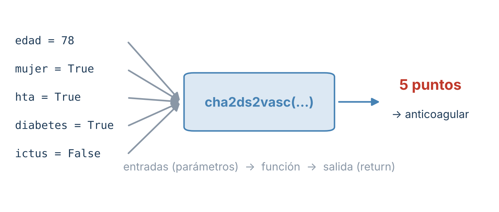
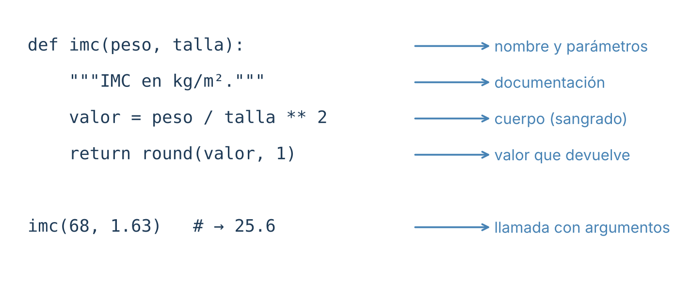
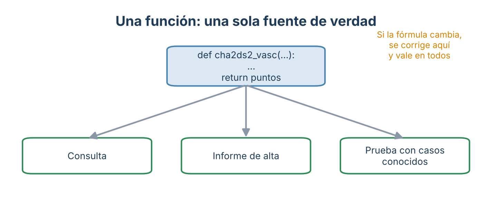
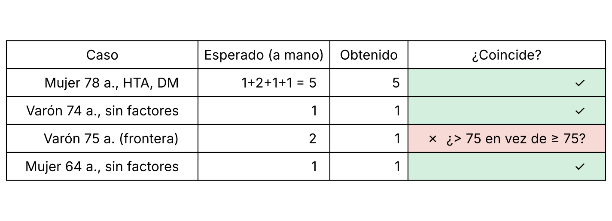
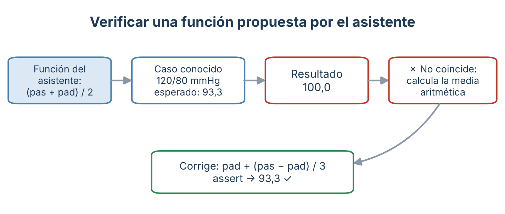

Bioestadística (1964) · Grado en Medicina · Curso 2027-2028
Tema 50Funciones en Python para la implementación de índices y escalas clínicas
Módulo 2. Programando con IA
Fernando Borrás Rocher · Universidad Miguel Hernández de Elche · CC BY 4.0
Objetivos de aprendizaje
Al terminar esta sesión serás capaz de:
- Definir funciones con
def, parámetros y valor de retorno. - Documentar una función para que otra persona sepa qué hace, qué recibe y qué devuelve.
- Implementar índices y escalas clínicas como funciones reutilizables.
- Usar parámetros con valor por defecto y llamadas por nombre.
- Comprobar una función con casos de prueba (
assert) antes de confiar en ella, sea tuya o del asistente de IA. - Rechazar valores de entrada imposibles en lugar de devolver un resultado absurdo.
Cómo usar esta presentación
Usa el selector de arriba para dar el tema en una sesión completa o en dos sesiones intercaladas.
🎓 Sesión de clase magistral
- 1. Caso clínico de partida 5 min
- 2. Conceptos clave 10 min
- 5. Autoevaluación 5 min
Explica los conceptos, haz la pausa activa y cierra con las ideas clave.
💻 Sesión de Colab
- 3. Demostración: escalas clínicas como funciones 20 min
- 4. Práctica en la app Bioestadística 10 min
- 5. Autoevaluación 5 min
Cada estudiante abre su copia del cuaderno, predice el resultado y después ejecuta la celda.
Teclas: ← → para pasar · N notas del profesor · M cambiar de modo · F pantalla completa · Esc índice.
1. Caso clínico de partida
Rosa: fibrilación auricular, dos cálculos que se repiten cada día

- CHA₂DS₂-VASc orienta la anticoagulación; el aclaramiento de creatinina, la dosis.
- Una función recibe los datos del paciente y devuelve el resultado: se escribe una vez y se usa siempre.
- Una función mal escrita se equivoca con todos los pacientes: hay que probarla.
2. Conceptos clave
2.1 Qué es una función
Anatomía de una función

- def, nombre y parámetros; el cuerpo sangrado; return devuelve el resultado.
- Sin return, la función calcula pero quien la llama recibe None.
2. Conceptos clave
2.2 Por qué usar funciones

- Una sola fuente de verdad: si la fórmula cambia, se corrige en un único sitio.
- Legibilidad:
cha2ds2_vasc(...)se entiende mejor que diez líneas de sumas. - Verificación: una función se puede probar con casos de resultado conocido.
2. Conceptos clave
2.3 Casos de prueba
Los casos de prueba salen de la guía clínica, no del código

- Para cada caso: datos de entrada y resultado esperado, calculado a mano.
- Los valores frontera (75 años, 65 años) son los que descubren los errores.
Pausa activa
Piensa 30 segundos, comenta con quien tienes al lado y vota.
¿Qué devuelve una función que calcula un resultado y lo muestra con print, pero no tiene return?
En la sesión de Colab
Lo que acabas de ver se comprueba con datos en el cuaderno del Tema 50.
- Abre el cuaderno y guarda tu copia: Archivo → Guardar una copia en Drive.
- Ejecuta la celda de configuración.
- Ve a la demostración y predice cada resultado antes de ejecutar.
3. Demostración: escalas clínicas como funciones
3.1 Una primera función: el IMC
▶ En tu cuaderno: 3.1 Una primera función: el IMC. Antes de ejecutar, escribe qué esperas obtener.
def imc(peso_kg, talla_m):
"""Calcula el índice de masa corporal.
Parámetros:
peso_kg: peso en kilogramos.
talla_m: talla en metros.
Devuelve:
IMC en kg/m².
"""
return peso_kg / talla_m ** 2
print(f"{imc(68, 1.63):.1f} kg/m²")
print(f"{imc(92, 1.80):.1f} kg/m²")La documentación de una función se consulta con help():
help(imc)3. Demostración: escalas clínicas como funciones
3.2 Funciones que usan otras funciones
▶ En tu cuaderno: 3.2 Funciones que usan otras funciones. Antes de ejecutar, escribe qué esperas obtener.
def categoria_imc(valor_imc):
"""Devuelve la categoría de la OMS para un IMC de adulto."""
if valor_imc < 18.5:
return "bajo peso"
elif valor_imc < 25:
return "normal"
elif valor_imc < 30:
return "sobrepeso"
else:
return "obesidad"
def informe_peso(peso_kg, talla_m):
"""Devuelve un texto con el IMC y su categoría."""
valor = imc(peso_kg, talla_m)
return f"IMC {valor:.1f} kg/m² ({categoria_imc(valor)})"
print(informe_peso(58, 1.55))3. Demostración: escalas clínicas como funciones
3.3 Casos de prueba
▶ En tu cuaderno: 3.3 Casos de prueba. Antes de ejecutar, escribe qué esperas obtener.
Los casos de prueba se eligen para comprobar el cálculo y los límites entre categorías. Si la celda no muestra nada salvo el mensaje final, todas las pruebas se han superado.
assert round(imc(68, 1.63), 1) == 25.6
assert categoria_imc(18.4) == "bajo peso"
assert categoria_imc(18.5) == "normal"
assert categoria_imc(24.9) == "normal"
assert categoria_imc(25.0) == "sobrepeso"
assert categoria_imc(30.0) == "obesidad"
print("Todas las pruebas superadas")3. Demostración: escalas clínicas como funciones
3.4 La escala CHA₂DS₂-VASc
▶ En tu cuaderno: 3.4 La escala CHA₂DS₂-VASc. Antes de ejecutar, escribe qué esperas obtener.
| Criterio | Puntos |
|---|---|
| C: insuficiencia cardiaca congestiva | 1 |
| H: hipertensión arterial | 1 |
| A₂: edad ≥ 75 años | 2 |
| D: diabetes mellitus | 1 |
| S₂: ictus o accidente isquémico transitorio previo | 2 |
| V: enfermedad vascular (infarto previo, arteriopatía periférica, placa aórtica) | 1 |
| A: edad de 65 a 74 años | 1 |
| Sc: sexo femenino | 1 |
La guía europea de fibrilación auricular de 2024 propone una versión sin el criterio de sexo (CHA₂DS₂-VA). Aquí programamos la clásica, todavía muy citada, y en la práctica se adapta en una línea.
Los criterios ausentes tienen el valor por defecto False. Por eso, al llamar a la función, indica solo los presentes, por su nombre.
def cha2ds2_vasc(edad, mujer, insuficiencia_cardiaca=False, hipertension=False,
diabetes=False, ictus_previo=False, enfermedad_vascular=False):
"""Calcula la escala CHA2DS2-VASc de riesgo de ictus en fibrilación auricular."""
puntos = 0
puntos += insuficiencia_cardiaca
puntos += hipertension
puntos += diabetes
puntos += 2 * ictus_previo
puntos += enfermedad_vascular
puntos += mujer
if edad >= 75:
puntos += 2
elif edad >= 65:
puntos += 1
return puntos
# Rosa: 78 años, mujer, hipertensa y diabética
print("CHA2DS2-VASc de Rosa:", cha2ds2_vasc(78, mujer=True, hipertension=True, diabetes=True))Rosa suma 5 puntos: 2 por la edad, 1 por la hipertensión, 1 por la diabetes y 1 por ser mujer. Comprobamos la función con casos calculados a mano, incluidos los límites de edad:
assert cha2ds2_vasc(50, mujer=False) == 0
assert cha2ds2_vasc(64, mujer=False) == 0
assert cha2ds2_vasc(65, mujer=False) == 1
assert cha2ds2_vasc(75, mujer=False) == 2
assert cha2ds2_vasc(78, mujer=True, hipertension=True, diabetes=True) == 5
assert cha2ds2_vasc(80, mujer=True, insuficiencia_cardiaca=True, hipertension=True,
diabetes=True, ictus_previo=True, enfermedad_vascular=True) == 9
print("Todas las pruebas superadas")3. Demostración: escalas clínicas como funciones
3.5 Aclaramiento de creatinina y validación de los datos
▶ En tu cuaderno: 3.5 Aclaramiento de creatinina y validación de los datos. Antes de ejecutar, escribe qué esperas obtener.
La fórmula de Cockcroft-Gault estima el aclaramiento de creatinina:
$$\text{ClCr (mL/min)} = \frac{(140 - \text{edad}) \times \text{peso (kg)}}{72 \times \text{creatinina (mg/dL)}} \times 0{,}85 \text{ si es mujer}$$
Una función clínica no debe devolver un resultado absurdo si recibe un dato imposible. Con raise ValueError(...) la función se niega a calcular y explica por qué.
def cockcroft_gault(edad, peso_kg, creatinina_mg_dl, mujer):
"""Aclaramiento de creatinina (mL/min) según Cockcroft-Gault."""
if creatinina_mg_dl <= 0:
raise ValueError("La creatinina debe ser mayor que 0 mg/dL")
if not 18 <= edad <= 120:
raise ValueError("La fórmula está validada en adultos")
aclaramiento = (140 - edad) * peso_kg / (72 * creatinina_mg_dl)
if mujer:
aclaramiento *= 0.85
return aclaramiento
print(f"Aclaramiento de Rosa: {cockcroft_gault(78, 58, 1.3, mujer=True):.0f} mL/min")assert round(cockcroft_gault(60, 72, 1.0, mujer=False)) == 80
assert round(cockcroft_gault(60, 72, 1.0, mujer=True)) == 68
try:
cockcroft_gault(70, 70, 0, mujer=False)
except ValueError as error:
print("Dato rechazado:", error)Comprobación a mano del primer caso: (140 − 60) × 72 / (72 × 1,0) = 80 mL/min. En una mujer, 80 × 0,85 = 68 mL/min.
3. Demostración: escalas clínicas como funciones
3.6 Verificar una función escrita por el asistente
▶ En tu cuaderno: 3.6 Verificar una función escrita por el asistente. Antes de ejecutar, escribe qué esperas obtener.

Supón que pides al asistente de IA: «Escribe en Python una función que calcule la presión arterial media a partir de la sistólica y la diastólica» y te devuelve esto:
def presion_arterial_media(pas, pad):
"""Presión arterial media (versión propuesta por un asistente)."""
return (pas + pad) / 2El código funciona sin errores, pero ¿es correcto? Lo comprobamos con un caso conocido: con 120/80 mmHg, la PAM aproximada es 80 + (120 − 80) / 3 = 93,3 mmHg. Quita el # de la última línea para ejecutar la prueba.
resultado = presion_arterial_media(120, 80)
print(f"Resultado de la función: {resultado:.1f} mmHg")
# assert round(resultado, 1) == 93.3La función devuelve 100 mmHg. Calcula la media aritmética de las dos cifras, no la presión arterial media fisiológica. La fisiológica pondera más la diastólica, porque el corazón pasa más tiempo en diástole. El código se ejecutaba sin error y el resultado era clínicamente incorrecto. Solo el caso de prueba lo ha descubierto. La versión correcta:
def presion_arterial_media(pas, pad):
"""Presión arterial media aproximada: PAD + (PAS - PAD) / 3."""
return pad + (pas - pad) / 3
assert round(presion_arterial_media(120, 80), 1) == 93.3
print("Prueba superada")Ampliación
Ampliación: filtrado glomerular estimado (CKD-EPI 2021)
La ecuación CKD-EPI de 2021, sin coeficiente racial, es la recomendada actualmente para estimar el filtrado glomerular:
$$\text{FGe} = 142 \times \min\left(\frac{Cr}{\kappa}, 1\right)^{\alpha} \times \max\left(\frac{Cr}{\kappa}, 1\right)^{-1{,}200} \times 0{,}9938^{\text{edad}} \times 1{,}012 \text{ si es mujer}$$
con κ = 0,7 y α = −0,241 en mujeres, y κ = 0,9 y α = −0,302 en varones. La creatinina (Cr) se expresa en mg/dL y el resultado en mL/min/1,73 m².
def fge_ckd_epi_2021(creatinina_mg_dl, edad, mujer):
"""Filtrado glomerular estimado (mL/min/1,73 m²), ecuación CKD-EPI 2021."""
kappa = 0.7 if mujer else 0.9
alfa = -0.241 if mujer else -0.302
cociente = creatinina_mg_dl / kappa
fge = 142 * min(cociente, 1) ** alfa * max(cociente, 1) ** -1.200 * 0.9938 ** edad
if mujer:
fge *= 1.012
return fge
print(f"FGe de Rosa: {fge_ckd_epi_2021(1.3, 78, mujer=True):.0f} mL/min/1,73 m²")Si no hay valores de referencia publicados, comprueba propiedades que la función debe cumplir. Por ejemplo: a más creatinina, menos filtrado; a más edad, menos filtrado.
assert fge_ckd_epi_2021(2.0, 60, mujer=False) < fge_ckd_epi_2021(1.0, 60, mujer=False)
assert fge_ckd_epi_2021(1.0, 80, mujer=False) < fge_ckd_epi_2021(1.0, 40, mujer=False)
print("Propiedades comprobadas")Ampliación
Ampliación: errores frecuentes
Olvidar return. Una función sin return devuelve None; el error aparece después, al usar ese None en un cálculo.
Confundir print con return. print muestra un valor en pantalla; return lo entrega para usarlo en otros cálculos.
Cambiar el orden de los parámetros. imc(1.63, 68) da 0,0004 kg/m² sin ningún error. Llamar por nombre (imc(peso_kg=68, talla_m=1.63)) lo evita.
Variables locales. Las variables creadas dentro de una función no existen fuera de ella.
Confiar en código que «funciona». Que una función se ejecute sin errores no significa que sea correcta, como se ha visto con la presión arterial media.
Ampliación
Ampliación: Variables locales y objetos mutables
Una variable que se crea dentro de una función es local: solo existe mientras la función se ejecuta. Si fuera hay otra variable con el mismo nombre, la función no la cambia.
Con las listas y los diccionarios es distinto. Son objetos mutables: si la función los modifica, cambia el original. Los números, los textos y las tuplas son inmutables: una función no los puede cambiar.
En tus materiales SIMUSTAT: Tema 110. Definición de funciones I, apartado 4. En tus materiales SIMUSTAT: Tema 120. Definición de funciones II, apartado 3.
dosis_mg = 500
def ajustar_insuficiencia_renal(dosis_mg):
dosis_mg = dosis_mg / 2 # variable local: solo existe aquí dentro
return dosis_mg
print("Dosis ajustada:", ajustar_insuficiencia_renal(dosis_mg), "mg")
print("Variable de fuera, sin cambios:", dosis_mg, "mg")
def anotar(glucemias, valor):
glucemias.append(valor) # modifica la lista original
glucemias = [110, 98]
anotar(glucemias, 65)
print("Lista original, modificada:", glucemias)
copia = glucemias.copy() # una copia protege el original
anotar(copia, 240)
print("Original:", glucemias, "| Copia:", copia)Regla práctica: si una función no debe cambiar los datos del paciente, dale una copia (.copy()). Y devuelve el resultado con return; no lo dejes en una variable global.
4. Práctica en la app Bioestadística
Abre la unidad 50 de la app Bioestadística y completa sus misiones:
- Misión básica (sin asistente): completar la función de superficie corporal de Mosteller y escribir sus casos de prueba.
- Misión clínica (con pistas): programar la escala CURB-65 como función y comprobar sus valores frontera.
- Misión reto (con asistente): pedir al asistente la escala de Glasgow como función. Escribir tú los casos de prueba y corregir lo que falle.
Al terminar, exporta el informe de la unidad.
5. Autoevaluación
Responde sin asistente y sin ejecutar código.
5. Autoevaluación
Elige una opción: verás la explicación.
¿Qué devuelve una función que calcula un resultado y lo muestra con print, pero no tiene return?
Un varón de 70 años es hipertenso y tuvo un ictus hace dos años. ¿Cuál es su CHA₂DS₂-VASc?
¿Qué ocurre al ejecutar assert round(imc(68, 1.63), 1) == 25.6 si la función es correcta?
El asistente propone una función que se ejecuta sin errores. ¿Qué debes hacer antes de usarla?
¿Por qué conviene que cockcroft_gault() lance un ValueError si la creatinina es 0?
Ideas clave
- Una función encapsula un cálculo clínico: se escribe una vez, se documenta y se reutiliza.
returnentrega el resultado;printsolo lo muestra.- Los parámetros con valor por defecto y las llamadas por nombre hacen las escalas más legibles y seguras.
- Ninguna función se usa sin pasar sus casos de prueba, y menos si la ha escrito un asistente de IA.
- Ante datos imposibles, la función debe negarse a calcular.
Glosario
| Término | Definición |
|---|---|
| Función | Bloque de código con nombre que recibe parámetros y devuelve un resultado |
| Parámetro | Dato que recibe una función |
| Valor de retorno | Resultado que entrega una función con return |
| Docstring | Texto de documentación al inicio de una función |
| Valor por defecto | Valor que toma un parámetro si no se indica al llamar a la función |
| Caso de prueba | Comprobación de que una función da el resultado esperado en un caso conocido |
assert |
Instrucción que detiene el programa si una condición es falsa |
raise |
Instrucción que lanza un error de forma deliberada |
Para saber más
- Tutorial de Python: definir funciones
- Cockcroft DW, Gault MH. Prediction of creatinine clearance from serum creatinine. Nephron. 1976;16(1):31-41. doi:10.1159/000180580
- Inker LA, et al. New creatinine- and cystatin C-based equations to estimate GFR without race. N Engl J Med. 2021;385(19):1737-1749. doi:10.1056/NEJMoa2102953
- Lip GY, et al. Refining clinical risk stratification for predicting stroke and thromboembolism in atrial fibrillation using a novel risk factor-based approach: the Euro Heart Survey on Atrial Fibrillation. Chest. 2010;137(2):263-272. doi:10.1378/chest.09-1584
- SIMUSTAT Unidigital UMH. Tema 110. Definición de funciones I. Cuaderno de Google Colab. Elche: Universidad Miguel Hernández; 2023.
- SIMUSTAT Unidigital UMH. Tema 120. Definición de funciones II. Cuaderno de Google Colab. Elche: Universidad Miguel Hernández; 2023.